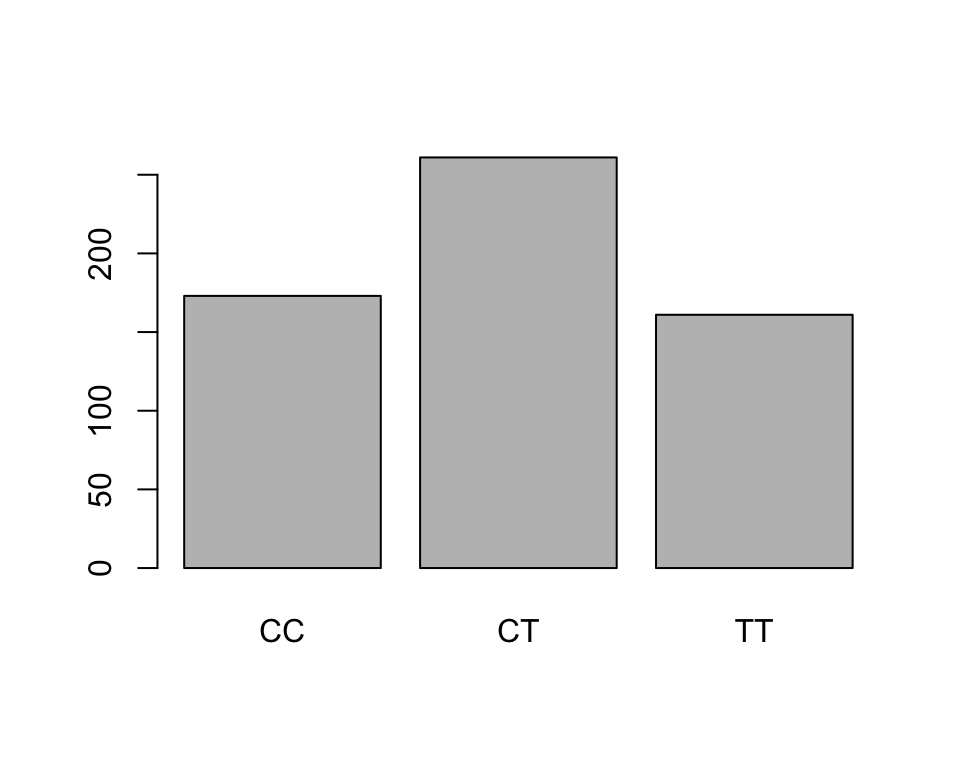
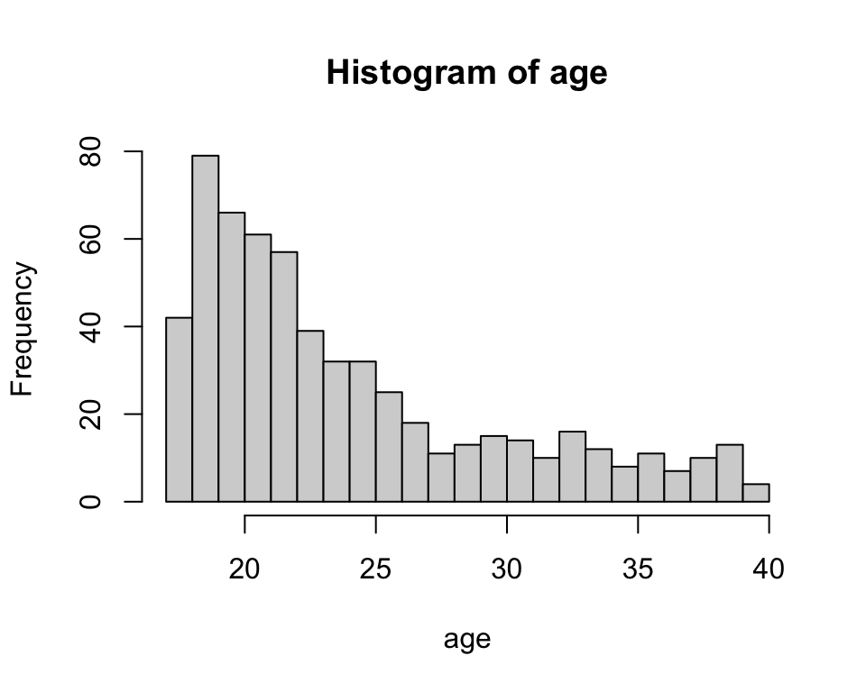
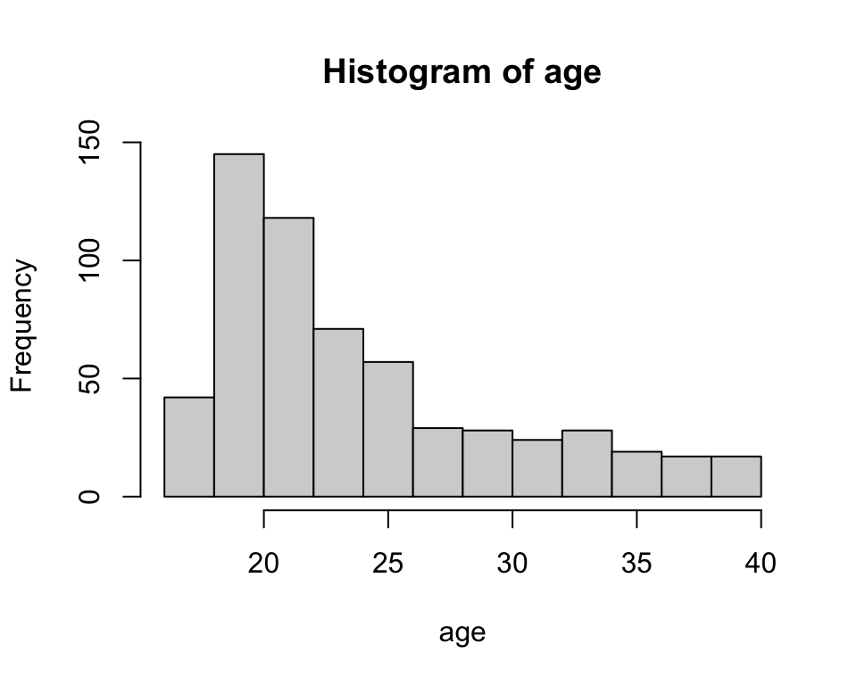

As a quick refresher, you can extract a vector of the observations for any particular variable from the dataframe as follows: famuss$[variable name].
While not strictly necessary, I recommend retrieving and storing the variable(s) you’ll use as separate objects, at least while you’re still a beginner. For example:
# extract the age variablefamuss$age# store the age column as a vectorage <- famuss$age
Basic statistical graphics
Categorical variables
For categorical variables, as you saw in the last lab, table(...) will tabulate counts of the number of occurrences of each unique values of a categorical variable. The result can be passed to barplot(...) for a simple barplot to visualize the frequency distribution:
# retrieve genotypegenotype <- famuss$genotype# make a table, generate a barplottable(genotype) |>barplot()

Your turn
Make a barplot to visualize the frequency distribution of racial groups in the FAMuSS study.
# retrieve race# make a table, generate a barplot
Numerical variables
If a numeric variable is discrete without too many values, the frequency distribution could be visualized without any binning as a barplot. However, this is not recommended because it will result in a plot that is not scaled properly.
Instead, it is better to make a histogram with one bin per unique possible value; this will scale the axis properly. However, it is also acceptable to make a histogram with binning that will result in aggregating some values. Both are shown below.
The approximate number of bins, and thus the amount of aggregation, is controlled by the argument breaks = ...:
# retrieve ageage <- famuss$age# effectively, a bar plot of ageshist(age, breaks =25)

# fewer binshist(age, breaks =10)

For continuous variables, binning is a necessity. The second plot is better, because it shows the shape more clearly without obscuring too much detail.
Your turn
Make a histogram of percent change in dominant arm strength. Experiment to see how the shape of the distribution appears at various binning resolutions; then pick a number of breaks that you feel reflects the data best.
# retrieve dominant arm percent change# make a histogram; find a binning that captures the shape well
To store a graphic as a separate file for use in other documents, find the ‘export’ icon in the plot panel and select the ‘Save as image’ option; then follow prompts. Try this for the plot you just made.
Descriptive statistics
In class we discussed several descriptive statistics for numeric variables. These statistics are so commonly used that they have their own functions in R.
Measures of location
The following functions return common measures of location for numeric variables:
mean(...) returns an average
median(...) returns a median
quantile(...) returns a quantile
min(...) and max(...) return a minimum and a maximum, respectively
# average agemean(age)
[1] 24.40168
# median age (middle value)median(age)
[1] 22
# 25th percentile of age ("quantile" is another term for percentile)quantile(age, probs =0.25)
25%
20
# 25th *and* 75th percentile of agequantile(age, probs =c(0.25, 0.75))
25% 75%
20 27
# minimum agemin(age)
[1] 17
# maximum agemax(age)
[1] 40
Notice how the probs = ... argument to the quantile() function, which specifies which percentile R will calculate, can be used to calculate multiple percentiles at once.
If you want to inspect all of the location measures above (the five-number summary plus the mean) the summary(...) function will do just that.
# all common location measuressummary(age)
Min. 1st Qu. Median Mean 3rd Qu. Max.
17.0 20.0 22.0 24.4 27.0 40.0
Your turn
Try computing the location measures above for percent change in dominant arm strength. Compare the mean and median. What does the comparison tell you about the skewness of this variable? Is this consistent with the histogram from the previous ‘your turn’?
# compute the five-number summary for change in dominant arm strength
Measures of spread
The following functions return common measures of spread for numeric variables:
range(...) returns the range (min, max)
IQR(...) returns the interquartile range (middle 50% of data)
var(...) returns the variance (average squared deviations from mean)
sd(...) returns the standard deviation (variance, on original scale)
# age rangerange(age)
[1] 17 40
# interquartile range of ages (width of interval containing middle 50% of data)IQR(age)
[1] 7
# variance of agevar(age)
[1] 33.79966
# standard deviation of agesd(age)
[1] 5.813748
Your turn
Compute the standard deviation of percent change in dominant arm strength.
# standard deviation of percent change in dominant arm strength
Interpret the value in context.
Robustness
When would you use median instead of mean? IQR instead of standard deviation? The answer has to do with robustness, which in statistics means sensitivity to outliers or extreme values.
To explore this idea, recall first the actual mean and median ages for the participants in the FAMuSS study as well as the age range:
# average agemean(age)
[1] 24.40168
# median agemedian(age)
[1] 22
# rangerange(age)
[1] 17 40
Now let’s add an artificial outlier – a few hypothetical participant who are in their 80’s and 90’s – and compute the measures of location again:
# average agemean(c(age, 96, 92, 87, 91))
[1] 24.84975
# median agemedian(c(age, 96, 92, 87, 91))
[1] 22
The mean increases while the median does not. More broadly, statistics based on percentiles are in general insensitive to outliers, unless there’s a large group of outlying observations. In this sense they are robust statistics.
A similar difference can be observed between deviation-based measures and interquartile range. The original measures were:
# variance of agesvar(age)
[1] 33.79966
# interquartile range of agesIQR(age)
[1] 7
Now adding in our artificial outliers:
# age variancevar(c(age, 96, 92, 87, 91))
[1] 63.55598
# age iqrIQR(c(age, 96, 92, 87, 91))
[1] 7
Grouped summaries
What if you wish to find the mean percent change in dominant arm strength separately for each genotype?
The tidyverse package loaded at the outset has a pair of functions, group_by and summarize, that allow you to do this efficiently. The steps are:
Start with the data framefamuss
group by the genotype variable
summarize
# average dominant arm change by genotypefamuss |>group_by(genotype) |>summarize(avg.drm.ch =mean(drm.ch))
# A tibble: 3 × 2
genotype avg.drm.ch
<fct> <dbl>
1 CC 10.7
2 CT 8.49
3 TT 13.0
The summarize function can actually compute multiple summaries: each argument should specify a name for the summary and the calculation to perform in the format <NAME> = <FUNCTION>(<COLUMN NAME>):
# average dominant and nondominant arm change by genotypefamuss |>group_by(genotype) |>summarize(avg.drm.ch =mean(drm.ch),avg.ndrm.ch =mean(ndrm.ch))
Calculate the median percent change in dominant arm strength separately for each genotype by modifying the first example above.
# median percent change in dominant arm strength by genotype
Practice problems
These problems may look lengthy at face value, but the calculations are rather brief. A suggestion is: determine which calculations are required for each part and focus on doing those calculations first; then look back over your results to interpret them and answer the prompts.
[L3] Use the census data again from the previous problem set and carry out the following descriptive summaries.
Make a histogram of total personal income. Choose the binning so as to capture the shape well but not obscure too much detail. Are there outliers?
Compute the mean and five-number summary of total personal income. Which measure of location is most appropriate and why?
Compute the interquartile range and standard deviation of total personal income and interpret them in context. Which measure is more appropriate and why?
Compute the median total personal income separately for men and women.
[L3] Data from Chen, W., et al., Maternal investment increases with altitude in a frog on the Tibetan Plateau. Journal of Evolutionary Biology 26-12 (2013) includes measurements pertaining to egg clutches of several populations of frog at breeding ponds (sites) in the eastern Tibetan Plateau.
How many samples were collected at each site?
Compute the frequency distribution of site altitudes among samples collected in the study.
Make a barplot of the frequency distribution from (a). Are samples collected more or less uniformily across altitudes? If not, which altitudes are most represented in the sample?
Make a histogram of clutch volumes. Describe the shape and number of modes.
Calculate the mean and five-number summary of clutch volume.
Calculate and interpret the standard deviation, variance, and interquartile range.
Calculate the average clutch volume separately for each altitude. Does average clutch volume seem to differ by altitude?
[optional] Devise a way to calculate the average absolute deviation.